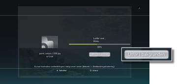
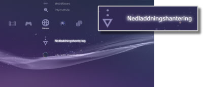

Nätverk > Bakgrundsnedladdning
Bakgrundsnedladdning
Bakgrundsnedladdning är en funktion som medan nedladdning av flera datafiler eller en stor fil pågår, låter dig utföra andra funktioner. Denna funktion är endast tillgänglig när [Utför i bakgrunden] visas på den skärm som hanterar hämtningen.

Tips!
- Det kan hända att du inte kan utföra bakgrundsnedladdning beroende på typ och antal datamängder som laddas ner.
- Nedladdade data som exempelvis spel eller videofiler måste kanske installeras innan de kan användas. När nedladdningen är klar kommer data som kräver installation att visas som
 eller
eller  för varje kategori.
för varje kategori. - Bakgrundsnedladdning är kanske inte tillgänglig om det finns avinstallerade data på hårddisken.
- Om PS3™-systemet stängs av under en bakgrundsnedladdning, sparas statusen för nedladdningen. Nedladdningen återstartar automatiskt nästa gång PS3™-systemet sätts på och ansluts till Internet.
- En bakgrundsnedladdning stoppas tillfälligt om någon av följande funktioner utförs. Nedladdningen återstartar automatiskt så snart funktionen avslutats.
- - När en Blu-ray-skiva eller DVD-skiva spelas
- - När nätverksfunktioner används vid onlinespel*
- - När program i PlayStation®2-format startas
- - När
 (Folding@home™) startas
(Folding@home™) startas - - När röst-/videochatt används
- - När systemet uppdateras
- - När inställningar under
 (Inställningar) justeras
(Inställningar) justeras
*
När ett spel håller på att avslutas, stoppas bakgrundsnedladdningen tillfälligt.
Viktig information
- Vissa PlayStation®2- eller PlayStation®-programvarutitlar kan spelas upp annorlunda på PS3™-systemet än de gör på PlayStation®2- och PlayStation®-systemen, eller inte spelas upp korrekt på PS3™-systemet.
- PlayStation®2-programvaran kan inte heller spelas på vissa PS3™-system. För mer information, se [Olika typer av uppspelningsbara skivor], besök SCE-webbsidan för ditt land eller läs dokumentationen som följde med ditt PS3™-system.
Nedladdningshantering
Detta alternativ visas endast om en bakgrundsnedladdning utförs. Du kan kontrollera statusen för nedladdningen eller avbryta nedladdningen från  (Webbläsare) eller
(Webbläsare) eller  (PlayStation®Store). Välj
(PlayStation®Store). Välj  (Nedladdningshantering) under
(Nedladdningshantering) under  (Nätverk).
(Nätverk).

Kontrollera status för nedladdning
Välj ikonen för de data vars nedladdningsstatus du vill kontrollera, tryck på  -knappen och välj [Status] från alternativmenyn.
-knappen och välj [Status] från alternativmenyn.
Avbryta nedladdning
Välj ikonen för de data vars nedladdning du vill avbryta, tryck på knappen , och välj sedan [Avsluta] i alternativmenyn. När nedladdningen avbrutits avlägsnas den från (Nedladdningshantering).
Pausa/återuppta nedladdningar
Välj ikonen för de data vars nedladdning du vill pausa, tryck på knappen och välj sedan [Paus] i alternativmenyn. Tryck på knappen igen för att återuppta nedladdningen, och välj därefter [Återuppta] i alternativmenyn.
Tips!
- Om du pausar nedladdningen visas
 med ikonen.
med ikonen. - Om du pausar en nedladdning när du laddar ned flera dataposter, kommer nästa datapost automatiskt att börja laddas ned.
Pausa alla nedladdningar
Välj ikonen för en nedladdning, tryck på knappen och välj därefter [Pausa alla] i alternativmenyn.
Återuppta alla nedladdningar
Välj ikonen för en nedladdning, tryck på knappen och välj därefter [Återuppta alla] i alternativmenyn.